산업보건지도사 (2019-03-30 기출문제)
1과목: 산업안전보건법령
1. 산업안전보건법령상 법령 요지의 게시 등과 안전ㆍ보건표지의 부착 등에 관한 설명으로 옳지 않은 것은?
- 근로자대표는 작업환경측정의 결과를 통지할 것을 사업주에게 요청할 수 있고, 사업주는 이에 성실히 응하여야 한다.
- 야간에 필요한 안전ㆍ보건표지는 야광물질을 사용하는 등 쉽게 알아볼 수 있도록 제작하여야 한다.
- 안전ㆍ보건표지의 표시를 명백히 하기 위하여 필요한 경우에는 안전ㆍ보건표지의 주위에 표시사항을 글자로 덧붙여 적을 수 있으며, 이 경우 글자는 노란색 바탕에 검은색 한글고딕체로 표기하여야 한다.
- 안전ㆍ보건표지의 성질상 설치하거나 부착하는 것이 곤란한 경우에는 해당 물체에 직접 도장(塗裝)할 수 있다.
- 사업주는 산업안전보건법과 산업안전보건법에 따른 명령의 요지를 상시 각 작업장 내에 근로자가 쉽게 볼 수 있는 장소에 게시하거나 갖추어 두어 근로자로 하여금 알게 하여야 한다.
(정답률: 91%)

2. 산업안전보건법령상 용어에 관한 설명으로 옳은 것을 모두 고른 것은?
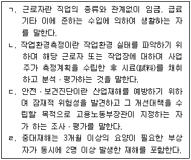
- ㄱ, ㄴ
- ㄱ, ㄹ
- ㄴ, ㄷ
- ㄷ, ㄹ
- ㄴ, ㄷ, ㄹ
(정답률: 알수없음)
3. 사업주 갑(甲)의 사업장에 산업재해가 발생하였다. 이 경우 갑(甲)이 기록ㆍ보존해야 할 사항으로 산업안전보건법령상 명시되지 않은 것은? (다만, 법령에 따른 산업재해조사표 사본을 보존하거나 요양신청서의 사본에 재해 재발방지 계획을 첨부하여 보존한 경우에 해당하지 아니 한다.)
- 사업장의 개요
- 근로자의 인적 사항 및 재산 보유현황
- 재해 발생의 일시 및 장소
- 재해 발생의 원인 및 과정
- 재해 재발방지 계획
(정답률: 알수없음)
4. 산업안전보건법령상 안전ㆍ보건 관리체제에 관한 설명으로 옳지 않은 것은?
- 사업주는 안전보건관리책임자를 선임하였을 때에는 그 선임 사실 및 법령에 따른 업무의 수행내용을 증명할 수 있는 서류를 갖춰 둬야 한다.
- 안전보건관리책임자는 안전관리자와 보건관리자를 지휘ㆍ감독한다.
- 사업주는 안전보건조정자로 하여금 근로자의 건강진단 등 건강관리에 관한 업무를 총괄관리하도록 하여야 한다.
- 사업주는 관리감독자에게 법령에 따른 업무 수행에 필요한 권한을 부여하고 시설ㆍ장비ㆍ예산, 그 밖의 업무수행에 필요한 지원을 하여야 한다.
- 사업주는 안전보건관리책임자에게 법령에 따른 업무를 수행하는 데 필요한 권한을 주어야 한다.
(정답률: 알수없음)
5. 산업안전보건법령상 안전보건관리규정에 관한 설명으로 옳지 않은 것은?
- 소프트웨어 개발 및 공급업에서 상시 근로자 100명을 사용하는 사업장은 안전보건관리규정을 작성하여야 한다.
- 안전보건관리규정의 내용에는 작업지휘자 배치 등에 관한 사항이 포함되어야 한다.
- 안전보건관리규정은 해당 사업장에 적용되는 단체협약 및 취업규칙에 반할 수 없다.
- 안전보건관리규정에 관하여는 산업안전보건법에서 규정한 것을 제외하고는 그 성질에 반하지 아니하는 범위에서 「근로기준법」의 취업규칙에 관한 규정을 준용한다.
- 사업주가 법령에 따라 안전보건관리규정을 작성하거나 변경할 때에는 산업안전보건위원회가 설치되어 있지 아니한 사업장의 경우에는 근로자대표의 동의를 받아야 한다.
(정답률: 알수없음)
6. 산업안전보건법령상 산업안전보건위원회의 심의ㆍ의결을 거쳐야 하는 사항에 해당하지 않는 것은?
- 유해하거나 위험한 기계ㆍ기구와 그 밖의 설비를 도입한 경우 안전ㆍ보건조치에 관한 사항
- 안전ㆍ보건과 관련된 안전장치 구입 시의 적격품 여부 확인에 관한 사항
- 산업재해에 관한 통계의 기록 및 유지에 관한 사항
- 산업재해 예방계획의 수립에 관한 사항
- 근로자의 안전ㆍ보건교육에 관한 사항
(정답률: 알수없음)
7. 산업안전보건법령상 안전관리자 및 보건관리자 등에 관한 설명으로 옳지 않은 것은?
- 사업주가 안전관리자를 배치할 때에는 연장근로ㆍ야간근로 또는 휴일근로 등 해당 사업장의 작업 형태를 고려하여야 한다.
- 건설업을 제외한 사업으로서 상시 근로자 300명 미만을 사용하는 사업의 사업주는 안전관리자의 업무를 안전관리전문기관에 위탁할 수 있다.
- 안전관리전문기관은 고용노동부장관이 정하는 바에 따라 안전관리 업무의 수행 내용, 점검 결과 및 조치 사항 등을 기록한 사업장관리카드를 작성하여 갖추어 두어야 한다.
- 지방고용노동관서의 장은 중대재해가 연간 2건 이상 발생한 경우에는 사업주에게 안전관리자ㆍ보건관리자를 교체하여 임명할 것을 명할 수 있다.
- 고용노동부장관은 안전관리전문기관이 업무정지 기간 중에 업무를 수행한 경우 그 지정을 취소하여야 한다.
(정답률: 알수없음)
8. 산업안전보건법령상 도급 금지 및 도급사업의 안전ㆍ보건에 관한 설명으로 옳지 않은 것은?
- 유해하거나 위험한 작업을 도급 줄 때 지켜야 할 안전ㆍ보건조치의 기준은 고용노동부령으로 정한다.
- 도금작업은 하도급인 경우를 제외하고는 고용노동부장관의 인가를 받지 아니하면 그 작업만을 분리하여 도급을 줄 수 없다.
- 법령상 구성 및 운영되어야 하는 안전ㆍ보건에 관한 협의체는 도급인인 사업주 및 그의 수급인인 사업주 전원으로 구성하여야 한다.
- 법령상 작업장의 순회점검 등 안전ㆍ보건관리를 하여야 하는 도급인인 사업주는 토사석 광업의 경우 2일에 1회 이상 작업장을 순회점검하여야 한다.
- 건설공사를 타인에게 도급하는 자는 자신의 책임으로 시공이 중단된 사유로 공사가 지연되어 그의 수급인이 산업재해 예방을 위하여 공사기간 연장을 요청하는 경우 특별한 사유가 없으면 그 연장 조치를 하여야 한다.
(정답률: 알수없음)
9. 산업안전보건법령상 안전보건관리책임자 등에 대한 직무교육에 관한 설명으로 옳은 것은?
- 법령에 따른 안전보건관리책임자에 해당하는 사람이 해당 직위에 위촉된 경우에는 직무교육을 이수한 것으로 본다.
- 법령에 따른 보건관리자가 의사인 경우에는 채용된 후 6개월 이내에 직무를 수행하는 데 필요한 신규교육을 받아야 한다.
- 법령에 따른 안전보건관리담당자에 해당하는 사람은 선임된 후 매 2년이 되는 날을 기준으로 전후 3개월 사이에 고용노동부장관이 실시하는 안전ㆍ보건에 관한 보수교육을 받아야 한다.
- 직무교육기관의 장은 직무교육을 실시하기 30일 전까지 교육 일시 및 장소 등을 직무교육 대상자에게 알려야 한다.
- 직무교육을 이수한 사람이 다른 사업장으로 전직하여 신규로 선임된 경우로서 선임신고 시 전직 전에 받은 교육이수증명서를 제출하면 해당 교육의 2분의 1을 이수한 것으로 본다.
(정답률: 알수없음)
10. 산업안전보건법령상 고객의 폭언등으로 인한 건강장해를 예방하기 위하여 사업주가 조치하여야 하는 것으로 명시된 것은?
- 업무의 일시적 중단 또는 전환
- 고객과의 문제 상황 발생 시 대처방법 등을 포함하는 고객응대업무 매뉴얼 마련
- 근로기준법에 따른 휴게시간의 연장
- 폭언등으로 인한 건강장해 관련 치료
- 관할 수사기관에 증거물을 제출하는 등 고객응대근로자가 폭언등으로 인하여 고소, 고발 등을 하는 데 필요한 지원
(정답률: 알수없음)
11. 산업안전보건법령상 사업주가 근로자에 대하여 실시하여야 하는 근로자 안전ㆍ보건교육의 내용 중 관리감독자 정기안전ㆍ보건교육의 내용에 해당하지 않는 것은?
- 산업재해보상보험 제도에 관한 사항
- 산업보건 및 직업병 예방에 관한 사항
- 유해ㆍ위험 작업환경 관리에 관한 사항
- 「산업안전보건법」및 일반관리에 관한 사항
- 표준안전작업방법 및 지도 요령에 관한 사항
(정답률: 알수없음)
12. 산업안전보건법령상 안전검사대상 유해ㆍ위험기계등의 검사 주기가 공정안전보고서를 제출하여 확인을 받은 경우 최초 안전검사를 실시한 후 4년마다인 것은?
- 이삿짐운반용 리프트
- 고소작업대
- 이동식 크레인
- 압력용기
- 원심기
(정답률: 알수없음)
13. 산업안전보건법령상 지게차에 설치하여야 할 방호장치에 해당하지 않는 것은?
- 헤드 가드
- 백레스트(backrest)
- 전조등
- 후미등
- 구동부 방호 연동장치
(정답률: 알수없음)
14. 산업안전보건법령상 불도저를 대여 받는 자가 그가 사용하는 근로자가 아닌 사람에게 불도저를 조작하도록 하는 경우 조작하는 사람에게 주지시켜야 할 사항으로 명시되지 않은 것은?
- 작업의 내용
- 지휘계통
- 연락ㆍ신호 등의 방법
- 제한속도
- 면허의 갱신
(정답률: 알수없음)
15. 산업안전보건법령상 설치ㆍ이전하는 경우 안전인증을 받아야 하는 기계ㆍ기구에 해당하는 것은?
- 프레스
- 곤돌라
- 롤러기
- 사출성형기(射出成形機)
- 기계톱 -프레스 롤러기, 사출성형기, 기계톱 : 부분변경시 안전인증
(정답률: 알수없음)
16. 산업안전보건법령상 자율안전확인의 신고 및 자율안전확인대상 기계ㆍ기구 등에 관한 설명으로 옳지 않은 것은?
- 휴대형 연마기는 자율안전확인대상 기계ㆍ기구등에 해당한다.
- 연구ㆍ개발을 목적으로 산업용 로봇을 제조하는 경우에는 신고를 면제할 수 있다.
- 파쇄ㆍ절단ㆍ혼합ㆍ제면기가 아닌 식품가공용기계는 자율안전확인대상 기계ㆍ기구등에 해당하지 않는다.
- 자동차정비용 리프트에 대하여 안전인증을 받은 경우에는 그 안전인증이 취소되거나 안전인증표시의 사용 금지 명령을 받은 경우가 아니라면 신고를 면제할 수 있다.
- 인쇄기에 대하여 고용노동부령으로 정하는 다른 법령에서 안전성에 관한 검사나 인증을 받은 경우에는 신고를 면제할 수 있다.
(정답률: 알수없음)
17. 산업안전보건기준에 관한 규칙상 근로자가 주사 및 채혈 작업을 하는 경우 사업주가 하여야 할 조치에 해당하지 않는 것은?
- 안정되고 편안한 자세로 주사 및 채혈을 할 수 있는 장소를 제공할 것
- 채취한 혈액을 검사 용기에 옮기는 경우에는 주사침 사용을 금지하도록 할 것
- 사용한 주사침의 바늘을 구부리는 행위를 금지할 것
- 사용한 주사침의 뚜껑을 부득이하게 다시 씌워야 하는 경우에는 두 손으로 씌우도록 할 것
- 사용한 주사침은 안전한 전용 수거용기에 모아 튼튼한 용기를 사용하여 폐기할 것
(정답률: 알수없음)
18. 산업안전보건법령상 건강 및 환경 유해성 분류기준에 관한 설명으로 옳지 않은 것은?
- 입 또는 피부를 통하여 1회 투여 또는 8시간 이내에 여러 차례로 나누어 투여하거나 호흡기를 통하여 8시간 동안 흡입하는 경우 유해한 영향을 일으키는물질은 급성 독성 물질이다.
- 접촉 시 피부조직을 파괴하거나 자극을 일으키는 물질은 피부 부식성 또는 자극성 물질이다.
- 호흡기를 통하여 흡입되는 경우 기도에 과민반응을 일으키는 물질은 호흡기과민성 물질이다.
- 자손에게 유전될 수 있는 사람의 생식세포에 돌연변이를 일으킬 수 있는 물질은 생식세포 변이원성 물질이다.
- 단기간 또는 장기간의 노출로 수생생물에 유해한 영향을 일으키는 물질은 수생 환경 유해성 물질이다.
(정답률: 80%)
19. 산업안전보건법령상 건강진단에 관한 내용으로 ( )에 들어갈 내용을 순서대로 옳게 나열한 것은?
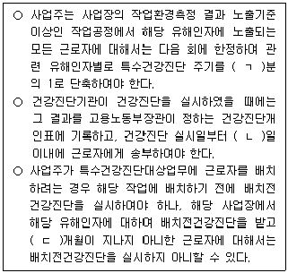
- ㄱ: 2, ㄴ: 15, ㄷ: 3
- ㄱ: 2, ㄴ: 30, ㄷ: 3
- ㄱ: 2, ㄴ: 30, ㄷ: 6
- ㄱ: 3, ㄴ: 30, ㄷ: 6
- ㄱ: 3, ㄴ: 60, ㄷ: 9
(정답률: 알수없음)
20. 산업안전보건법령상 근로의 금지 및 제한에 관한 설명으로 옳은 것은?
- 사업주는 신장 질환이 있는 근로자가 근로에 의하여 병세가 악화될 우려가 있는 경우에 근로자의 동의가 없으면 근로를 금지할 수 없다.
- 사업주는 질병자의 근로를 다시 시작하도록 하는 경우에는 미리 보건관리자(의사가 아닌 보건관리자도 포함한다), 산업보건의 또는 건강진단을 실시한 의사의 의견을 들어야 한다.
- 사업주는 관절염에 해당하는 질병이 있는 근로자를 고기압 업무에 종사시킬 수 있다.
- 사업주는 갱내에서 하는 작업에 종사하는 근로자에게는 1일 6시간, 1주 34시간을초과하여 근로하게 하여서는 아니 된다.
- 사업주는 인력으로 중량물을 취급하는 작업에서 유해ㆍ위험 예방조치 외에 작업과 휴식의 적정한 배분, 그 밖에 근로시간과 관련된 근로조건의 개선을 통하여 근로자의 건강 보호를 위한 조치를 하여야 한다.
(정답률: 알수없음)
21. 산업안전보건법령상 안전보건개선계획 등에 관한 설명으로 옳지 않은 것은?
- 사업주는 안전보건개선계획을 수립할 때에는 산업안전보건위원회가 설치되어 있지 아니한 사업장의 경우에는 근로자대표의 의견을 들어야 한다.
- 사업주와 근로자는 안전보건개선계획을 준수하여야 한다.
- 안전보건개선계획의 수립ㆍ시행명령을 받은 사업주는 고용노동부장관이 정하는 바에 따라 안전보건개선계획서를 작성하여 그 명령을 받은 날부터 60일 이내에 관할 지방고용노동관서의 장에게 제출하여야 한다.
- 직업병에 걸린 사람이 연간 1명 발생한 사업장은 안전ㆍ보건진단을 받아 안전보건개선계획을 수립ㆍ제출하도록 지방고용노동관서의 장이 명할 수 있는 사업장에 해당한다.
- 안전보건개선계획서에는 시설, 안전ㆍ보건관리체제, 안전ㆍ보건교육, 산업재해 예방 및 작업환경의 개선을 위하여 필요한 사항이 포함되어야 한다.
(정답률: 알수없음)
22. 산업안전보건법령상 산업재해 발생 사실을 은폐하도록 교사(敎唆)하거나 공모(共謀)한 자에게 적용되는 벌칙은?
- 500만원 이하의 벌금
- 1년 이하의 징역 또는 1천만원 이하의 벌금
- 3년 이하의 징역 또는 3천만원 이하의 벌금
- 5년 이하의 징역 또는 5천만원 이하의 벌금
- 7년 이하의 징역 또는 1억원 이하의 벌금
(정답률: 알수없음)
23. 산업안전보건법령상 작업환경측정 등에 관한 설명으로 옳지 않은 것은?
- 사업주는 작업환경측정의 결과를 해당 작업장 근로자에게 알려야 하며 그 결과에 따라 근로자의 건강을 보호하기 위하여 해당 시설ㆍ설비의 설치ㆍ개선 또는 건강진단의 실시 등 적절한 조치를 하여야 한다.
- 사업주는 산업안전보건위원회 또는 근로자대표가 요구하면 작업환경측정 결과에 대한 설명회를 직접 개최하거나 작업환경측정을 한 기관으로 하여금 개최하도록 하여야 한다.
- 고용노동부장관은 작업환경측정의 수준을 향상시키기 위하여 매년 지정측정기관을 평가한 후 그 결과를 공표하여야 한다.
- 고용노동부장관은 작업환경측정 결과의 정확성과 정밀성을 평가하기 위하여 필요하다고 인정하는 경우에는 신뢰성평가를 할 수 있다.
- 시설ㆍ장비의 성능은 고용노동부장관이 지정측정기관의 작업환경측정 수준을 평가하는 기준에 해당한다.
(정답률: 알수없음)
24. 갑(甲)은 전국 규모의 사업주단체에 소속된 임직원으로서 해당 단체가 추천하여 법령에 따라 위촉된 명예감독관이다. 산업안전보건법령상 갑(甲)의 업무가 아닌 것을 모두 고른 것은?
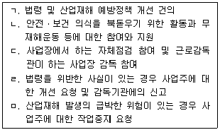
- ㄱ, ㄴ, ㄷ
- ㄱ, ㄴ, ㅁ
- ㄱ, ㄷ, ㄹ
- ㄴ, ㄹ, ㅁ
- ㄷ, ㄹ, ㅁ
(정답률: 알수없음)
25. 산업안전보건법령상 산업재해 예방사업 보조ㆍ지원의 취소에 관한 설명으로 옳지 않은 것은?
- 거짓으로 보조ㆍ지원을 받은 경우 보조ㆍ지원의 전부를 취소하여야 한다.
- 보조ㆍ지원 대상을 임의매각ㆍ훼손ㆍ분실하는 등 지원 목적에 적합하게 유지ㆍ관리ㆍ사용하지 아니한 경우 보조ㆍ지원의 전부 또는 일부를 취소하여야 한다.
- 보조ㆍ지원이 산업재해 예방사업의 목적에 맞게 사용되지 아니한 경우 보조ㆍ지원의 전부 또는 일부를 취소하여야 한다.
- 보조ㆍ지원 대상 기간이 끝나기 전에 보조ㆍ지원 대상 시설 및 장비를 국외로 이전 설치한 경우 보조ㆍ지원의 전부 또는 일부를 취소하여야 한다.
- 사업주가 보조ㆍ지원을 받은 후 5년 이내에 해당 시설 및 장비의 중대한 결함이나 관리상 중대한 과실로 인하여 근로자가 사망한 경우 보조ㆍ지원의 전부를 취소하여야 한다.
(정답률: 알수없음)
2과목: 산업보건일반
26. 산업보건의 역사에 관한 설명으로 옳지 않은 것은?
- 그리스의 갈레노스(Galenos, Galen, Galenus)는 구리 광산에서 광부들에 대한 산(acid) 증기의 위험성을 보고하였다.
- 독일의 아그리콜라(G. Agricola)는 「광물에 대하여(De Re Metallica)」를 통해 광업 관련 유해성을 언급하였으며, 이는 후에 Hoover 부부에 의해 번역되었다.
- 영국의 필(R. Peel) 경은 자신의 면방직공장에서 진폐증이 집단적으로 발병하자, 그 원인에 대해 조사하였으며, 「도제 건강 및 도덕법」제정에 주도적인 역할을 하였다.
- 1825년 「공장법」은 대부분 어린이 노동과 관련한 내용이었으며, 1833년에 감독권과 행정명령에 관한 내용이 첨가되어 실질적인 효과를 거두게 되었다.
- 하버드 의대 최초의 여교수인 해밀턴(A. Hamilton)은 「미국의 산업중독」을 발간하여 납중독, 황린에 의한 직업병, 일산화탄소 중독 등을 기술하였다.
(정답률: 알수없음)
27. 화학물질 및 물리적 인자의 노출기준에서 "Skin" 표시가 된 화학물질로만 나열한 것은?
- 메탄올, 사염화탄소
- 트리클로로에틸렌, 아세톤
- 트리클로로에틸렌, 사염화탄소
- 1,1,1-트리클로로에탄, 메탄올
- 1,1,1-트리클로로에탄, 아세톤
(정답률: 알수없음)
28. 작업환경측정 자료들의 분포(distribution)는 주로 우측으로 무한히 뻗어있는 형태(positively skewed)이다. 이에 관한 설명으로 옳은 것은?
- 평균, 중위수, 최빈수가 같은 값이다.
- 평균이 중위수보다 더 크다.
- 이를 표준정규분포라고 한다.
- 기하표준편차는 1 미만이다.
- 최빈수가 평균보다 더 크다.
(정답률: 알수없음)
29. 작업환경측정 시 관련 절차별로 다음과 같이 오차 값이 추정될 때, 누적오차(cumulative error) 값은 약 얼마인가?
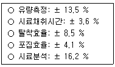
- 3.6 %
- 12.6 %
- 23.4 %
- 29.7 %
- 45.9 %
(정답률: 알수없음)
30. 산업환기시스템 설계 중 덕트의 합류점에서 시스템의 효율을 극대화하기 위한 정압(SP)균형유지법에 관한 설명으로 옳지 않은 것은?
- 저항 조절을 위하여 설계 시 덕트의 직경을 조절하거나 유량을 재조정하는 방법이다.
- 최대 저항경로 선정이 잘못되어도 설계 시 쉽게 발견할 수 있다.
- 균형이 유지되려면 설계도면에 있는 대로 덕트가 설치되어야 한다.
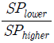
를 계산하여 그 값이 0.8보다 작다면 정압이 낮은 덕트의 직경을 다시 설계해야 한다. 를 계산하여 그 값이 0.8 이상일 때는 그 차를 무시하고, 높은 정압을 지배정압으로 한다.
를 계산하여 그 값이 0.8 이상일 때는 그 차를 무시하고, 높은 정압을 지배정압으로 한다.
(정답률: 알수없음)
31. 방사능 측정값 600 pCi를 표준화(SI) 단위 값으로 옳게 표현한 것은? (단, 1 Ci = 3.7 × 1010 dps)
- 16 Bq
- 22.2 Bq
- 16 dps
- 22.2 dpm
- 6 × 10-10 Ci
(정답률: 알수없음)
32. 화학물질 및 물리적 인자의 노출기준 중 발암성에 대한 분류 기준이 아닌 것은?
- 미국 국립산업안전보건연구원(NIOSH)의 분류
- 미국 독성프로그램(NTP)의 분류
- 「유럽연합의 분류·표시에 관한 규칙(EU CLP)」의 분류
- 국제암연구소(IARC)의 분류
- 미국 산업안전보건청(OSHA)의 분류
(정답률: 알수없음)
33. 생물학적 유해인자인 독소(toxin)에 관한 설명으로 옳은 것은?
- 마이코톡신(mycotoxins)은 세균이 유기물을 분해할 때 내놓는 분해산물로 종에 따라 다르다.
- 아플라톡신 B1(aflatoxin B1)은 폐암을 초래한다.
- 글루칸(glucan)은 바이러스의 세포벽 성분으로 호흡기 점막을 자극하여 건물증후군(SBS)을 초래하는 원인으로 추정되고 있다.
- 엔도톡신(endotoxins)은 그람양성세균이 죽을 때나 번식할 때 내놓는 독소이다.
- 낮은 농도의 엔도톡신은 호흡기계 점막의 자극, 발열, 오한 등을 일으키나, 높은 농도에서는 기도와 폐포 염증, 폐기능 장해까지 초래한다.
(정답률: 알수없음)
34. 다음에 해당하는 중금속은?
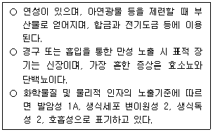
- 납
- 크롬
- 카드뮴
- 수은
- 망간
(정답률: 알수없음)
35. 근골격계부담작업의 범위 및 유해요인조사 방법에 관한 고시의 내용으로 옳지 않은 것은?
- 유해요인조사는 고시에서 정한 유해요인조사표 및 근골격계질환 증상조사표를 활용하여야 한다.
- 작업장 상황조사 내용에는 작업설비, 작업량, 작업속도, 업무변화가 포함된다.
- 하루에 총 2시간 이상, 분당 2회 이상 4.5 ㎏ 이상의 물체를 드는 작업은 근골격계부담작업에 해당된다.
- "단기간 작업"이란 2개월 이내에 종료되는 1회성 작업을 말한다.
- "간헐적인 작업"이란 연간 총 작업일수가 30일을 초과하지 않는 작업을 말한다.
(정답률: 알수없음)
36. 산업안전보건기준에 관한 규칙에서 정하고 있는 "밀폐공간"에 해당하지 않는 것은?
- 장기간 사용하지 않은 우물 등의 내부
- 화학물질이 들어있던 반응기 및 탱크의 내부
- 간장ㆍ주류ㆍ효모 그 밖에 발효하는 물품이 들어 있거나 들어 있었던 탱크ㆍ창고 또는 양조주의 내부
- 천장ㆍ바닥 또는 벽이 건성유를 함유하는 페인트로 도장되어 그 페인트가 건조된 후의 지하실 내부
- 드라이아이스를 사용하는 냉장고ㆍ냉동고ㆍ냉동화물자동차 또는 냉동컨테이너의 내부
(정답률: 알수없음)
37. 1기압, 25 ℃에서 수은(분자량: 200)의 증기압이 0.00152 mmHg라고 할 때, 이 조건의 밀폐된 작업장에서 공기 중 수은의 포화농도(mg/m3)는 약 얼마인가?
- 2.0
- 16.4
- 27.9
- 35.9
- 156.3
(정답률: 알수없음)
38. 화학물질 및 물리적 인자의 노출기준에서 "호흡성"으로 표시되지 않은 화학물질은
- 카본블랙
- 산화아연 분진
- 인듐 및 그 화합물
- 산화규소(결정체 석영)
- 텅스텐(가용성화합물)
(정답률: 알수없음)
39. 다음 정의에 해당하는 역학 지표는?
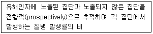
- 교차비(odd ratio)
- 기여위험도(attributable risk)
- 상대위험도(relative risk)
- 치명률(fatality rate)
- 발병률(attack rate)
(정답률: 알수없음)
40. 다음 역학연구의 설계를 인과관계의 근거(evidence) 수준이 높은 것에서 낮은 것의 순서대로 옳게 나열한 것은?
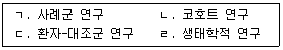
- ㄴ→ ㄱ→ㄷ →ㄹ
- ㄴ →ㄷ→ ㄹ→ㄱ
- ㄷ→ㄴ →ㄱ → ㄹ
- ㄷ→ ㄴ→ㄹ →ㄱ
- ㄹ →ㄴ→ ㄱ→ㄷ
(정답률: 알수없음)
41. 유해물질의 생물학적 노출지표 및 시료채취시기에 관한 내용으로 옳지 않은 것은?
- 크실렌은 소변 중 메틸마뇨산을 작업 종료 시 채취하여 분석한다.
- 반감기가 길어서 수년간 인체에 축적되는 물질에 대해서는 채취시기가 중요하지 않다.
- 유해물질의 공기 중 농도로는 호흡기를 통한 흡수 정도를 예측할 수 있으나,피부와 소화기를 통한 흡수는 평가할 수 없다.
- 일산화탄소는 호기 중 카복시헤모글로빈을 작업 종료 후 10~15분 이내에 채취하여 분석한다.
- 배출이 빠르고 반감기가 5분 이내인 물질에 대해서는 작업 전, 작업 중 또는 작업 종료 시 시료를 채취한다.
(정답률: 알수없음)
42. 청각기관의 구조와 소리의 전달에 관한 설명으로 옳지 않은 것은?
- 음압은 외이의 외청도(ear canal)를 거쳐 고막에 전달되어 이를 진동시킨다.
- 중이는 추골, 침골, 등골의 세 개 뼈로 구성되어 있다.
- 고막을 통하여 들어온 음압은 중이를 거쳐 난형창을 통해 달팽이관으로 전달된다.
- 내이액에 전달된 음압은 고막관(tympanic canal)을 거쳐 전정관(vestibular canal)으로 이동한다.
- 귀는 외이, 중이, 내이로 구분할 수 있다.
(정답률: 59%)
43. 산업안전보건법상 유해인자와 특수ㆍ배치전ㆍ수시 건강진단의 1차 임상검사 및 진찰에 해당하는 기관/조직을 연결한 것으로 옳지 않은 것은?
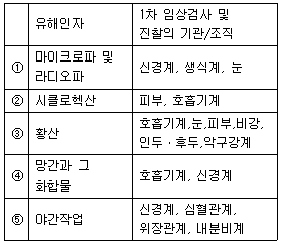
- ①
- ②
- ③
- ④
- ⑤
(정답률: 알수없음)
44. 작업환경측정 및 지정측정기관 평가 등에 관한 고시에서 명시하고 있는 화학적 인자와 시료채취 매체, 분석기기의 연결로 옳지 않은 것은?
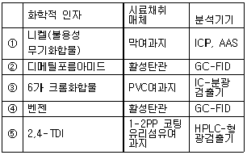
- ①
- ②
- ③
- ④
- ⑤
(정답률: 알수없음)
45. 보호구 안전인증 고시에서 화학물질용 보호복의 구분 기준 중 "분진 등과 같은 에어로졸에 대한 차단 성능을 갖는 보호복"은?
- 1형식
- 2형식
- 3형식
- 4형식
- 5형식
(정답률: 30%)
46. CNC 공정에서 메탄올을 사용할 때, 작업자가 착용해야 하는 호흡보호구는?
- 유기화합물용 방독마스크
- 산가스용 방독마스크
- 방진방독겸용 마스크
- 전동식 방독마스크
- 송기마스크
(정답률: 알수없음)
47. 고용노동부에서 발표한 2017년 산업재해 현황에 관한 설명으로 옳지 않은 것은?
- 직업병이란 작업환경 중 유해인자와 관련성이 뚜렷한 질병으로 난청, 진폐, 금속 및 중금속 중독, 유기화합물 중독, 기타 화학물질 중독 등이 있다.
- 직업관련성 질병이란 업무적 요인과 개인질병 등 업무외적 요인이 복합적으로 작용하여 발생하는 질병으로 뇌ㆍ심혈관질환, 신체부담작업, 요통 등이 있다.
- 2017년에는 2016년 대비 업무상질병자 중 직업병과 직업관련성 질병의 빈도수가 모두 증가하였다.
- 업무상질병자 중 직업병에서는 난청이 가장 높은 빈도수로 나타났다.
- 업무상질병자 중 직업관련성 질병에서는 요통이 가장 높은 빈도수로 나타났다.
(정답률: 알수없음)
48. 다음에서 설명하는 여과지의 종류는?
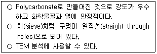
- MCE 막여과지
- Nuclepore 여과지
- PTFE 막여과지
- 섬유상 여과지
- PVC 막여과지
(정답률: 알수없음)
49. 표준화사망비(SMR)에 관한 설명으로 옳지 않은 것은?
- 직접표준화법으로 산출한다.
- 관찰사망수를 기대사망수로 나눈다.
- 기대사망은 관찰사망 집단보다 더 큰 집단을 사용한다.
- 1(100%)보다 크면 관찰집단에서 특정 질병에 대한 위험요인이 존재할 가능성이 있다.
- 직업역학분야에서 사용하는 주요 지표 중 하나이다.
(정답률: 알수없음)
50. 한 사업장에서 다음과 같은 재해결과가 나왔을 때, 이에 관한 해석으로 옳지 않은 것은?
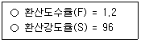
- 작업자 1인당 일평생 1.2회의 재해가 발생한다.
- 작업자 1인당 일평생 96일의 근로손실일수가 발생한다.
- 재해 1건당 근로손실일수는 평균 80일이다.
- 사업장의 도수율은 12이다.
- 사업장의 강도율은 9.6이다.
(정답률: 알수없음)
3과목: 기업진단 · 지도
51. 직무관리에 관한 설명으로 옳지 않은 것은?
- 직무분석이란 직무의 내용을 체계적으로 분석하여 인사관리에 필요한 직무정보를 제공하는 과정이다.
- 직무설계는 직무 담당자의 업무 동기 및 생산성 향상 등을 목표로 한다.
- 직무충실화는 작업자의 권한과 책임을 확대하는 직무설계방법이다.
- 핵심직무특성 중 과업중요성은 직무담당자가 다양한 기술과 지식 등을 활용하도록 직무설계를 해야 한다는 것을 말한다.
- 직무평가는 직무의 상대적 가치를 평가하는 활동이며, 직무평가 결과는 직무급의 산정에 활용된다.
(정답률: 알수없음)
52. 노동조합에 관한 설명으로 옳지 않은 것은?
- 직종별 노동조합은 산업이나 기업에 관계없이 같은 직업이나 직종 종사자들에 의해 결성된다.
- 산업별 노동조합은 기업과 직종을 초월하여 산업을 중심으로 결성된다.
- 산업별 노동조합은 직종 간, 회사 간 이해의 조정이 용이하지 않다.
- 기업별 노동조합은 동일 기업에 근무하는 근로자들에 의해 결성된다.
- 기업별 노동조합에서는 근로자의 직종이나 숙련 정도를 고려하여 가입이 결정된다.
(정답률: 알수없음)
53. 조직구조 유형에 관한 설명으로 옳지 않은 것은?
- 기능별 구조는 부서 간 협력과 조정이 용이하지 않고 환경변화에 대한 대응이 느리다.
- 사업별 구조는 기능 간 조정이 용이하다.
- 사업별 구조는 전문적인 지식과 기술의 축적이 용이하다.
- 매트릭스 구조에서는 보고체계의 혼선이 야기될 가능성이 높다.
- 매트릭스 구조는 여러 제품라인에 걸쳐 인적자원을 유연하게 활용하거나 공유할 수 있다.
(정답률: 알수없음)
54. JIT(just-in-time) 생산방식의 특징으로 옳지 않은 것은?
- 간판(kanban)을 이용한 푸시(push) 시스템
- 생산준비시간 단축과 소(小)로트 생산
- U자형 라인 등 유연한 설비배치
- 여러 설비를 다룰 수 있는 다기능 작업자 활용
- 불필요한 재고와 과잉생산 배제
(정답률: 알수없음)
55. 매슬로우(A. Maslow)의 욕구단계이론 중 자아실현욕구를 조직행동에 적용한 것은?
- 도전적 과업 및 창의적 역할 부여
- 타인의 인정 및 칭찬
- 화해와 친목분위기 조성 및 우호적인 작업팀 결성
- 안전한 작업조건 조성 및 고용 보장
- 냉난방 시설 및 사내식당 운영
(정답률: 알수없음)
56. 품질개선 도구와 그 주된 용도의 연결로 옳지 않은 것은?
- 체크시트(check sheet): 품질 데이터의 정리와 기록
- 히스토그램(histogram): 중심위치 및 분포 파악
- 파레토도(Pareto diagram): 우연변동에 따른 공정의 관리상태 판단
- 특성요인도(cause and effect diagram): 결과에 영향을 미치는 다양한 원인들을 정리
- 산점도(scatter plot): 두 변수 간의 관계를 파악
(정답률: 알수없음)
57. 어떤 프로젝트의 PERT(program evaluation and review technique) 네트워크와 활동소요시간이 아래와 같을 때, 옳지 않은 설명은?
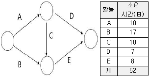
- 주경로(critical path)는 A-C-E이다.
- 프로젝트를 완료하는 데에는 적어도 28일이 필요하다.
- 활동 D의 여유시간은 11일이다.
- 활동 E의 소요시간이 증가해도 주경로는 변하지 않는다.
- 활동 A의 소요시간을 5일 만큼 단축시킨다면 프로젝트 완료시간도 5일 만큼 단축된다.
(정답률: 알수없음)
58. 공장의 설비배치에 관한 설명으로 옳은 것을 모두 고른 것은?
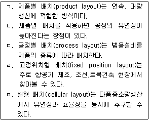
- ㄱ, ㅁ
- ㄱ, ㄹ, ㅁ
- ㄴ, ㄷ, ㄹ
- ㄱ, ㄴ, ㄹ, ㅁ
- ㄱ, ㄷ, ㄹ, ㅁ
(정답률: 알수없음)
59. 리더십 이론의 설명으로 옳은 것을 모두 고른 것은?
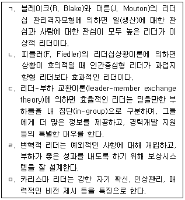
- ㄱ, ㄴ, ㄹ
- ㄱ, ㄷ, ㅁ
- ㄴ, ㄷ, ㄹ
- ㄱ, ㄴ, ㄷ, ㅁ
- ㄱ, ㄷ, ㄹ, ㅁ
(정답률: 알수없음)
60. 산업심리학의 연구방법에 관한 설명으로 옳지 않은 것은?
- 관찰법: 행동표본을 관찰하여 주요 현상들을 찾아 기술하는 방법이다.
- 사례연구법: 한 개인이나 대상을 심층 조사하는 방법이다.
- 설문조사법: 설문지 혹은 질문지를 구성하여 연구하는 방법이다.
- 실험법: 원인이 되는 종속변인과 결과가 되는 독립변인의 인과관계를 살펴보는 방법이다.
- 심리검사법: 인간의 지능, 성격, 적성 및 성과를 측정하고 정보를 제공하는 방법이다.
(정답률: 알수없음)
61. 일-가정 갈등(work-family conflict)에 관한 설명으로 옳지 않은 것은?
- 일과 가정의 요구가 서로 충돌하여 발생한다.
- 장시간 근무나 과도한 업무량은 일-가정 갈등을 유발하는 주요한 원인이 될 수 있다.
- 적은 시간에 많은 것을 해내기를 원하는 경향이 강한 사람은 더 많은 일-가정 갈등을 경험한다.
- 직장은 일-가정 갈등을 감소시키는 데 중요한 역할을 담당하지 않는다.
- 돌봐 주어야 할 어린 자녀가 많을수록 더 많은 일-가정 갈등을 경험한다.
(정답률: 알수없음)
62. 인간의 정보처리 방식 중 정보의 한 가지 측면에만 초점을 맞추고 다른 측면은 무시하는 것은?
- 선택적 주의(selective attention)
- 분할 주의(divided attention)
- 도식(schema)
- 기능적 고착(functional fixedness)
- 분위기 가설(atmosphere hypothesis)
(정답률: 알수없음)
63. 다음에 해당하는 갈등 해결방식은?
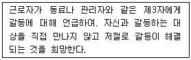
- 순응하기 방식(accommodating style)
- 협력하기 방식(collaborating style)
- 회피하기 방식(avoiding style)
- 강요하기 방식(forcing style)
- 타협하기 방식(compromising style)
(정답률: 알수없음)
64. 직무분석에 관한 설명으로 옳은 것을 모두 고른 것은?
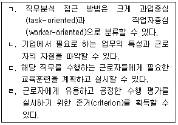
- ㄱ, ㄴ
- ㄴ, ㄷ
- ㄴ, ㄹ
- ㄱ, ㄷ, ㄹ
- ㄱ, ㄴ, ㄷ, ㄹ
(정답률: 알수없음)
65. 조명과 직무환경에 관한 설명으로 옳지 않은 것은?
- 조도는 어떤 물체나 표면에 도달하는 빛의 양을 말한다.
- 동일한 환경에서 직접조명은 간접조명보다 더 밝게 보이도록 하며, 눈부심과 눈의 피로도를 줄여준다.
- 눈부심은 시각 정보 처리의 효율을 떨어트리고, 눈의 피로도를 증가시킨다.
- 작업장에 조명을 설치할 때에는 빛의 밝기뿐만 아니라 빛의 배분도 고려해야한다.
- 최적의 밝기는 작업자의 연령에 따라서 달라진다.
(정답률: 알수없음)
66. 다음 중 인간의 정보처리와 표시장치의 양립성(compatibility)에 관한 내용으로 옳은 것을 모두 고른 것은?
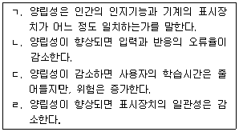
- ㄱ, ㄴ
- ㄴ, ㄷ
- ㄷ, ㄹ
- ㄱ, ㄴ, ㄹ
- ㄱ, ㄴ, ㄷ, ㄹ
(정답률: 알수없음)
67. 아래 그림에서 평행한 두 선분은 동일한 길이임에도 불구하고 위의 선분이 더 길어 보인다. 이러한 현상을 나타내는 용어는?
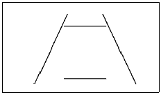
- 포겐도르프(Poggendorf) 착시현상
- 뮬러-라이어(Muller-Lyer) 착시현상
- 폰조(Ponzo) 착시현상
- 티체너(Titchener) 착시현상
- 죌너(Zollner) 착시현상
(정답률: 알수없음)
68. 다음 중 산업재해이론과 그 내용의 연결로 옳지 않은 것은?
- 하인리히(H. Heinrich)의 도미노 이론: 사고를 촉발시키는 도미노 중에서 불안 전상태와 불안전행동을 가장 중요한 것으로 본다.
- 버드(F. Bird)의 수정된 도미노 이론: 하인리히(H. Heinrich)의 도미노 이론을 수정한 이론으로, 사고 발생의 근본적 원인을 관리 부족이라고 본다.
- 애덤스(E. Adams)의 사고연쇄반응 이론: 불안전행동과 불안전상태를 유발하거나 방치하는 오류는 재해의 직접적인 원인이다.
- 리전(J. Reason)의 스위스 치즈 모델: 스위스 치즈 조각들에 뚫려 있는 구멍들이 모두 관통되는 것처럼 모든 요소의 불안전이 겹쳐져서 산업재해가 발생한다는 이론이다.
- 하돈(W. Haddon)의 매트릭스 모델: 작업자의 긴장 수준이 지나치게 높을 때, 사고가 일어나기 쉽고 작업 수행의 질도 떨어지게 된다는 것이 핵심이다.
(정답률: 알수없음)
69. 안전보건경영시스템 인증기준(KOSHA 18001)에서 사용하는 주요 용어의 정의로 옳지 않은 것은?
- 사업장 또는 조직이란 사업을 운영하는 조직과 기능을 갖추고 있는 회사, 기업, 연구소 또는 이들의 복합집단을 말한다.
- 유해ㆍ위험요인이란 유해ㆍ위험을 일으킬 잠재적 가능성이 있는 것의 고유한 특징이나 속성을 말한다.
- 위험성이란 유해ㆍ위험요인이 부상 또는 질병으로 이어질 수 있는 가능성(빈도)과 중대성(강도)을 조합한 것을 말한다.
- 관찰사항이란 사업장 또는 조직의 안전보건활동이 안전보건경영체제상의 기준이나 작업표준, 지침, 절차, 규정 등으로부터 벗어난 상태를 말한다.
- 예방조치란 잠재적인 부적합사항, 기타 바람직하지 않은 잠재적 상황의 원인을 제거하여 발생을 방지하기 위한 조치를 말한다.
(정답률: 알수없음)
70. 제조업 등 유해ㆍ위험방지계획서 제출ㆍ심사ㆍ확인에 관한 고시에서 규정하고 있는 유해ㆍ위험방지계획서 제출 대상으로 옳은 것은?
- 금속 또는 비금속광물을 해당물질의 녹는점 이상으로 가열하여 용해하는 노(爐)로서 용량이 3톤 이상인 것
- 열원기준으로 연료의 최대소비량이 시간당 30킬로그램 이상인 건조설비
- 열원기준으로 정격소비전력이 30킬로와트 이상인 건조설비
- 유해물질로부터 나오는 가스ㆍ증기 또는 분진의 발산원을 밀폐ㆍ제거하기 위해 배풍량이 분당 50세제곱미터인 이동식 국소배기장치
- 용접ㆍ용단용으로 사용하기 위하여 2개의 인화성가스 저장 용기를 상호간에 도관으로 연결한 이동식 가스집합장치로부터 용접 토치까지의 일관 설비로서 인화성가스 집합량이 500킬로그램인 가스집합 용접장치
(정답률: 알수없음)
71. 산업안전보건기준에 관한 규칙상 악천후 및 강풍 시 작업 중지에 관한 내용이다. ( )에 들어갈 내용으로 옳은 것은?
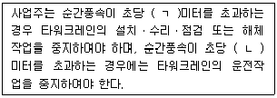
- ㄱ: 5, ㄴ: 5
- ㄱ: 8, ㄴ: 10
- ㄱ: 10, ㄴ: 10
- ㄱ: 10, ㄴ: 12
- ㄱ: 10, ㄴ: 15
(정답률: 알수없음)
72. 제조물 책임법상 제조물의 결함에 해당하는 것을 모두 고른 것은?
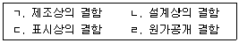
- ㄱ
- ㄴ, ㄹ
- ㄷ, ㄹ
- ㄱ, ㄴ, ㄷ
- ㄱ, ㄴ, ㄷ, ㄹ
(정답률: 알수없음)
73. 보호구 안전인증의 추락 및 감전 위험방지용 안전모의 성능기준에 관한 내용으로 안전모의 시험성능기준의 항목이 아닌 것은?
- 내관통성
- 충격흡수성
- 부식성
- 내전압성
- 난연성
(정답률: 알수없음)
74. 다음과 같은 특징을 가지고 있는 위험성평가 기법은
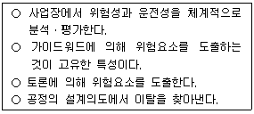
- FMEA
- HAZOP
- FTA
- Checklist
- PHA
(정답률: 알수없음)
75. 사업장 위험성평가에 관한 지침에서 명시하고 있는 위험성 감소대책 수립 시 우선적으로 고려해야 할 사항을 순서대로 옳게 나열한 것은?
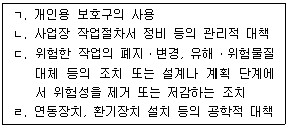
- ㄱ→ ㄴ→ㄷ →ㄹ
- ㄱ →ㄴ→ ㄹ→ㄷ
- ㄴ→ㄱ →ㄹ → ㄷ
- ㄷ→ ㄹ→ㄱ →ㄴ
- ㄷ →ㄹ→ ㄴ→ㄱ
(정답률: 알수없음)
근로자대표는 작업환경측정의 결과를 통지할 것을 사업주에게 요청할 수 있고, 사업주는 이에 성실히 응하여야 한다. - 옳은 설명입니다.
야간에 필요한 안전ㆍ보건표지는 야광물질을 사용하는 등 쉽게 알아볼 수 있도록 제작하여야 한다. - 옳은 설명입니다.
안전ㆍ보건표지의 성질상 설치하거나 부착하는 것이 곤란한 경우에는 해당 물체에 직접 도장(塗裝)할 수 있다. - 옳은 설명입니다.
사업주는 산업안전보건법과 산업안전보건법에 따른 명령의 요지를 상시 각 작업장 내에 근로자가 쉽게 볼 수 있는 장소에 게시하거나 갖추어 두어 근로자로 하여금 알게 하여야 한다. - 옳은 설명입니다.